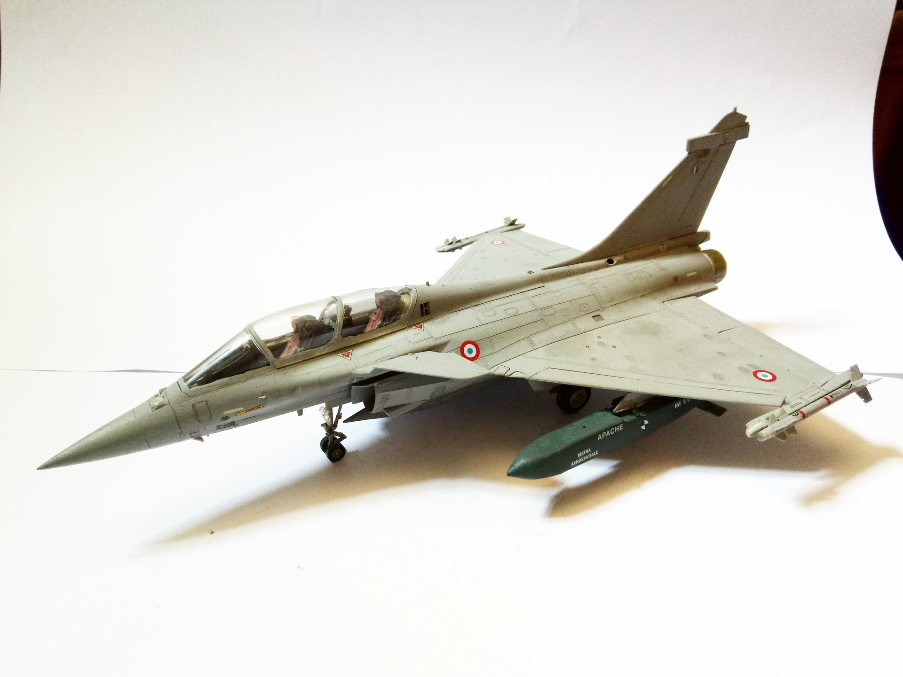

Aerei · scale model archive
Dassault Rafale B
Dassault Rafale B — Kit: Revell, Scale: 1/48. M Flotille 12 F 1999 Noteworthy how Dassault managed to design a navalized version, contrary to Eurofighter…

Photo gallery
English description
M Flotille 12 F 1999
Noteworthy how Dassault managed to design a navalized version, contrary to Eurofighter
#1/48 #Revell
Descrizione italiana
M Flotille 12 F 1999.
Noteworthy how Dassault managed una progetto una navalized versione, contrary una Eurofigther.